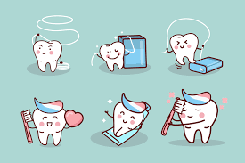

A Importância da Saúde Bucal e as Visitas Regulares ao Dentista
A saúde bucal desempenha um papel fundamental na nossa qualidade de vida. Afinal, nossos dentes não apenas nos permitem sorrir com confiança, mas também desempenham um papel crucial na nossa capacidade de comer e falar. Além disso, problemas bucais não tratados podem ter impactos significativos na saúde geral do corpo. Neste artigo, exploraremos a importância da saúde bucal e as razões pelas quais as visitas regulares ao dentista são essenciais para manter um sorriso saudável.
Prevenção é o Melhor Tratamento
A velha máxima "prevenir é melhor do que remediar" é especialmente verdadeira quando se trata da saúde bucal. A maioria das condições bucais, como cáries e doenças gengivais, pode ser prevenida com uma boa higiene oral e cuidados adequados. Escovar os dentes pelo menos duas vezes ao dia, usar o fio dental regularmente e limitar o consumo de açúcares são passos essenciais para manter os dentes saudáveis. Além disso, as visitas regulares ao dentista desempenham um papel crucial na prevenção.

Visitas ao Dentista: Quão Regulares Devem Ser?
A frequência ideal das visitas ao dentista pode variar de pessoa para pessoa, mas, em geral, a maioria dos profissionais recomenda consultas a cada seis meses. Durante essas visitas, o dentista pode realizar uma série de verificações e procedimentos para garantir que sua saúde bucal esteja em ordem. Isso pode incluir:
- Limpeza profissional: Mesmo com uma boa higiene oral em casa, é comum que placas e tártaro se acumulem nos dentes. Uma limpeza profissional remove essas acumulações e ajuda a prevenir problemas futuros.
- Exame bucal: O dentista examinará seus dentes e gengivas em busca de sinais de cáries, doenças gengivais, lesões ou outras preocupações.
- Radiografias: Em alguns casos, radiografias são necessárias para verificar problemas que não são visíveis a olho nu, como cáries entre os dentes ou infecções ósseas.
- Orientação sobre higiene oral: Seu dentista pode oferecer dicas e orientações personalizadas sobre como melhorar sua higiene oral em casa.
Detectando Problemas Precocemente
Uma das maiores vantagens das visitas regulares ao dentista é a capacidade de detectar problemas bucais precocemente. Quanto mais cedo um problema for identificado, mais fácil e econômico é tratá-lo. Por exemplo, uma cárie detectada em estágios iniciais pode ser tratada com uma restauração simples, enquanto uma cárie avançada pode exigir procedimentos mais invasivos, como uma coroa ou tratamento de canal. Doenças gengivais, como a gengivite, também podem ser tratadas com sucesso quando detectadas cedo. Se não forem tratadas, podem progredir para estágios mais graves, como a periodontite, que pode levar à perda dos dentes.
Impacto na Saúde Geral
A saúde bucal não está separada da saúde geral. Existem várias conexões entre problemas bucais e condições médicas mais amplas, incluindo doenças cardíacas, diabetes e até mesmo complicações na gravidez. Manter uma boa saúde bucal pode ajudar a reduzir o risco de desenvolver essas condições e melhorar a qualidade de vida de forma geral.
Conclusão
As visitas regulares ao dentista desempenham um papel fundamental na manutenção de uma saúde bucal adequada. Além de prevenir problemas, elas também permitem a detecção precoce e o tratamento eficaz de condições bucais. Não negligencie a importância da saúde bucal e agende suas consultas regulares ao dentista. Lembre-se de que um sorriso saudável não é apenas esteticamente agradável, mas também essencial para o seu bem-estar geral.